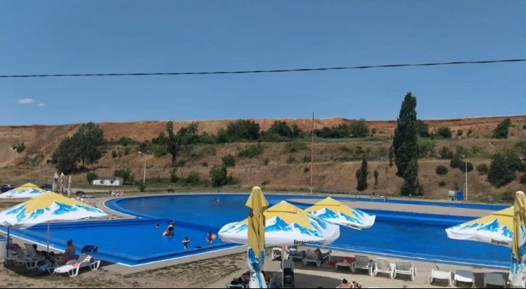
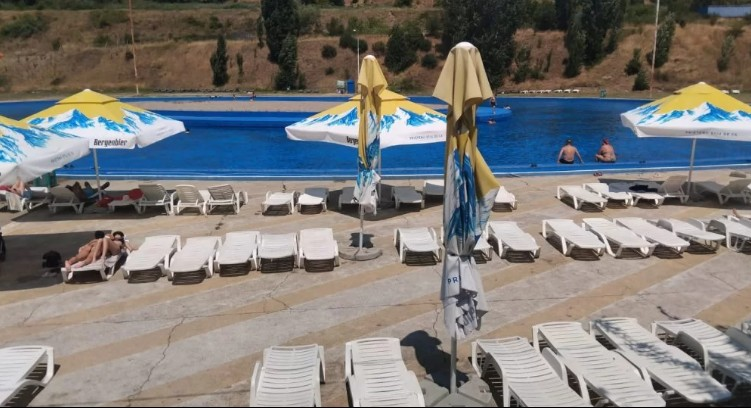

Ștrandul de Agrement Schela este din nou deschis publicului, după finalizarea lucrărilor de întreținere și igienizare desfășurate în această săptămână. Reprezentanții Primăriei Drobeta îi invită pe severineni să se bucure de zilele călduroase într-un spațiu pregătit în cele mai bune condiții.
Lucrările au inclus golirea bazinului, curățarea și igienizarea acestuia, reumplerea cu apă și tratarea acesteia, pentru asigurarea unor condiții optime de siguranță și confort pentru toți vizitatorii.
Ștrandul beneficiază de apă tratată conform normelor legale, iar siguranța este asigurată zilnic de asistență medicală. Înainte de deschidere, s-au realizat lucrări de reparații, iar zona de agrement include terase cu mâncare, băuturi răcoritoare și înghețată, toate într-un cadru prietenos și curat.

„Ștrandul de Agrement Schela funcționează după programul normal și vă așteptăm aici pentru momente de relaxare și răcorire în zilele toride de vară", au transmis reprezentanții Primăriei Drobeta-Turnu Severin.
Ștrandul funcționează după următorul program:
Tariful de acces este de 11 lei. Beneficiază de acces gratuit pensionarii, de luni până joi, persoanele cu handicap, în fiecare zi, precum și copiii cu vârsta de până la 10 ani. Pentru pensionari, în perioada vineri-duminică, tariful de acces este de 11 lei.
Pentru menținerea condițiilor de igienă, apa din bazinul superior este schimbată în fiecare joi și duminică seara, iar la bazinul inferior ori de câte ori este necesar.